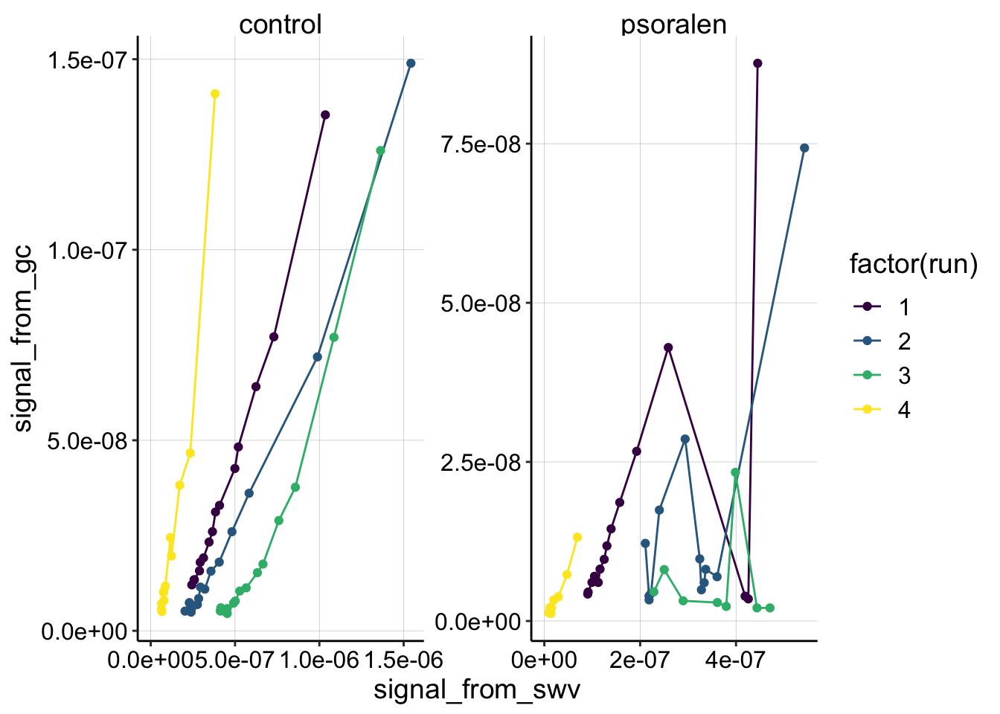
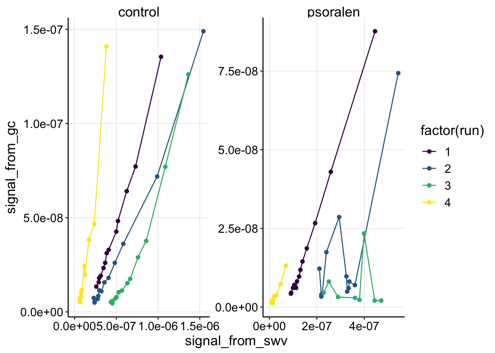
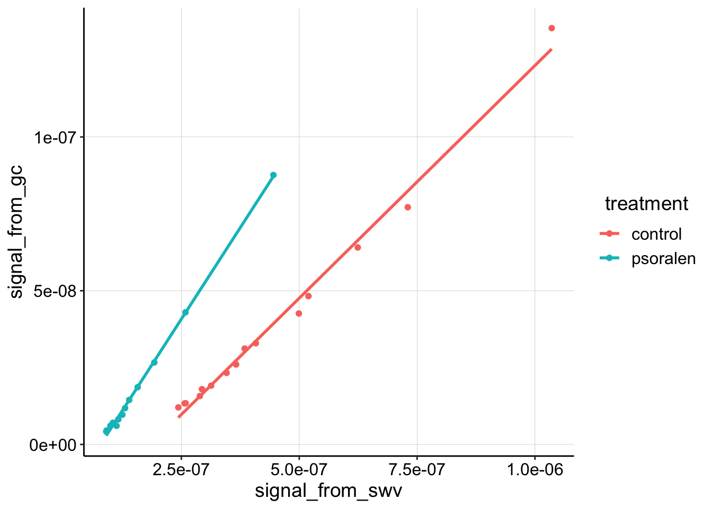
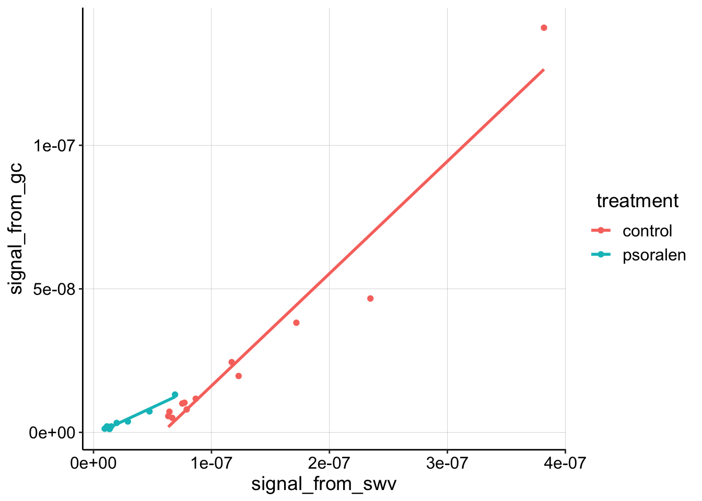
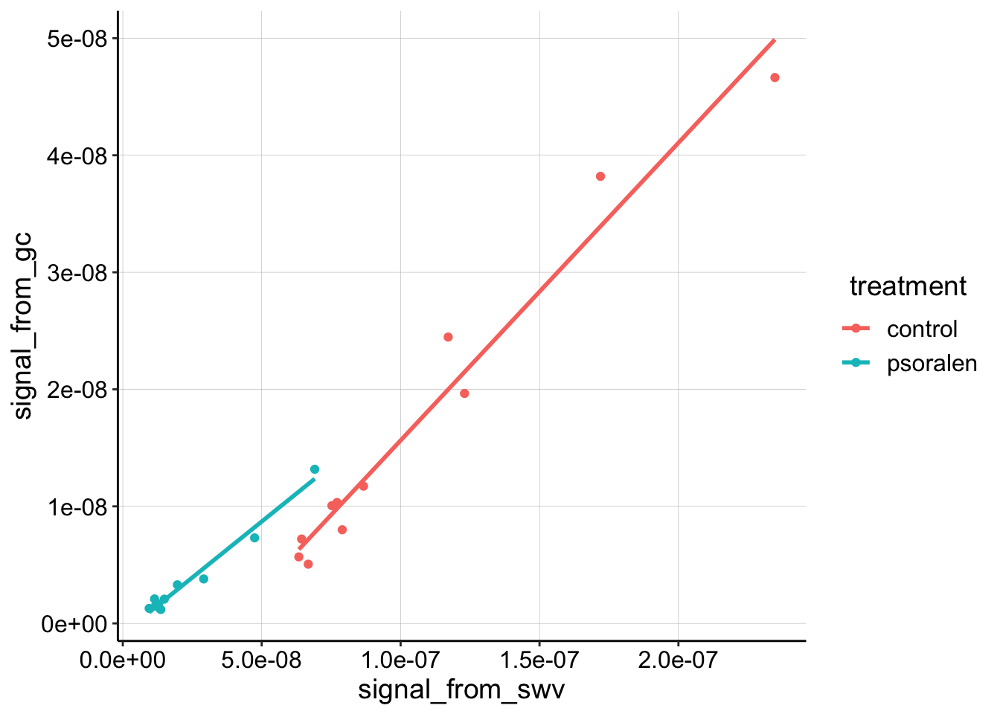
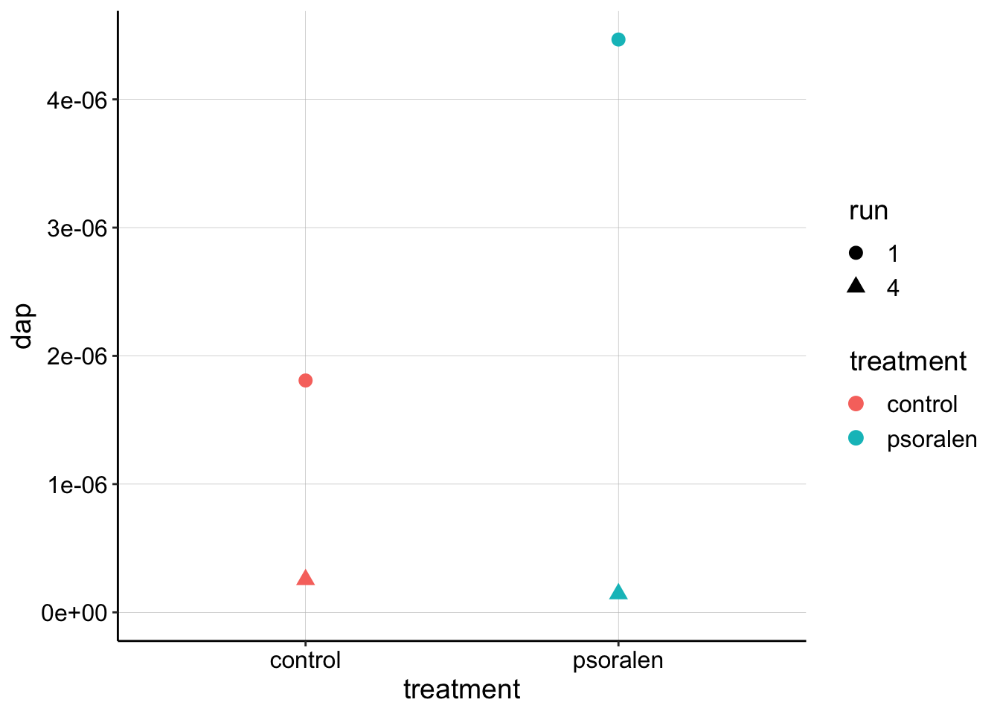

library(tidyverse)
library(cowplot)
library(broom)
library(modelr)
library(viridis)
library(lubridate)
library(hms)
knitr::opts_chunk$set(tidy.opts=list(width.cutoff=60),tidy=TRUE, echo = TRUE, message=FALSE, warning=FALSE, fig.align="center")
source("../../tools/echem_processing_tools.R")
source("../../tools/plotting_tools.R")
theme_set(theme_1())This is the third replicate of the psoralen IDA experiment. Please see the processing notebook for the quantification of the raw echem scans. See the README for the project folder for the protocol and details about the data.
Let’s look at the data quantified from the electrode 1 SWVs.
df_all <- read_csv("../Processing/01_23_19_processed_swv_gc_all.csv")
#ignore rep 0, because it is not paired with a GC measurement, ignore soak datapoints
ggplot(df_all %>% filter(electrode_from_swv=='i1' & reactor=='transfer' & rep>0), aes(x = signal_from_swv, y = signal_from_gc, color = factor(run))) +
geom_line()+
geom_point()+
facet_wrap(~treatment,scales='free') +
xlim(0,NA) +
scale_color_viridis(discrete = T)
Ok,the most obvious thing we can see is that there’s some craziness that happened in the quantitation of the psoralen data. This is to be expected from some of the weird echem behavior described in the processing notebook. Psoralen runs 2 and 3 look unsalvagable, but you can see that run 1 and 4 look pretty ok, except that psoralen run 1 has 2 points that seem to be outliers.
Apparently those two outlier datapoints for psoralen run 1 are reps 14 and 15, when the SWVs randomly had very high noise. I believe we could smooth the data and get nice quantification for those scans, but for now let’s exclude all of the reps >= 14.
ggplot(df_all %>% filter(electrode_from_swv=='i1' & reactor=='transfer' & rep>0 & rep<14), aes(x = signal_from_swv, y = signal_from_gc, color = factor(run))) +
geom_line()+
geom_point()+
facet_wrap(~treatment,scales='free') +
xlim(0,NA) +
scale_color_viridis(discrete = T) Now you can see that runs 1 and 4 in both the control and psoralen treatments look pretty nicely behaved and quite linear. Thankfully, those runs were taken at the same scan rates for the two biofilms, so they are directly comparable. See more detail below.
The other thing to notice, is that the control data takes on a different shape from runs 1-3. Run 1 seems very linear, Run 2 maybe has a slight curve, but Run 3 is obviously nonlinear. I do not know what causes this change, but it is interesting that this trend also appeared in other replicates of this experiment. In general I can think of three reasons why the nonlinear trend might appear:
Let’s focus on run 1, which may be the most reliable subset of the data. All of the SWVs were taken with fast settings.
df_1 <- read_csv("../Processing/01_23_19_processed_swv_gc_run_1.csv")
ggplot(df_1 %>% filter(rep>0), aes(x = signal_from_swv, y = signal_from_gc, color = treatment)) + geom_point() +
geom_smooth(method='lm', se=F) Here you can see that the linear trend is very nice. It is also clear that the psoralen dataset has a higher slope than the control.
Recall that: \[ D_{ap} = \frac{(m A \psi)^2 }{S^2 \pi t_p }\] So, the higher the slope the higher \(D_{ap}\). Let’s directly calculate \(D_{ap}\) from the slopes of the fitted lines:
dap_calc <- function(m, t_p=1/(2*300)){
psi <- 0.91
A <- 0.013 #cm^2
S <- 18.4 #cm
d_ap <- (m*A*psi)^2 / (S^2 * pi * t_p)
d_ap
}
swv_gc_lms <- df_1 %>%
filter(rep>0 ) %>%
group_by(treatment) %>%
do(tidy(lm(signal_from_gc~signal_from_swv,.)))
(swv_gc_dap <- swv_gc_lms %>%
filter(term=='signal_from_swv') %>%
mutate(dap=dap_calc(m = estimate)))## # A tibble: 2 x 7
## # Groups: treatment [2]
## treatment term estimate std.error statistic p.value dap
## <chr> <chr> <dbl> <dbl> <dbl> <dbl> <dbl>
## 1 control signal_from_swv 0.151 0.00399 38.0 1.06e-14 1.81e-6
## 2 psoralen signal_from_swv 0.238 0.00324 73.5 3.70e-16 4.47e-6As was clear from the plot, the psoralen titration actually has a higher \(D_{ap}\) estimate than the control, which is the exact opposite of what we would expect from the DNA CT hypothesis. Let’s look at run 4, before we draw our final conclusions.
\(D_{ap}\) Parameter Notes:
So, apparently \(t_p\) should be one half of the sample period (inverse of frequency). Therefore \(t_p = \frac{1}{2} * \frac{1}{300\text{Hz}}\).
Also, the surface area was measured to be ~0.025 \(\text{cm}^2\), but in terms of the dimensions of the actual IDA, there are 65 pairs of electrodes that are 2mm long and 10um wide. Therefore for just the i1 channel \(65 * 0.2 * 0.001 = 0.013 \text{cm}^2\). The estimate therefore seems high, and could be one reason why the blank IDA PYO \(D_{ap}\) measurements seem quite high.
Here’s the Run 4 data. Note that these SWVs were taken with slow parameters. Note that the psoralen SWVslows did have a slightly weird shape (see processing).
df_4 <- read_csv("../Processing/01_23_19_processed_swv_gc_run_4.csv")
ggplot(df_4 %>% filter(rep>0), aes(x = signal_from_swv, y = signal_from_gc, color = treatment)) + geom_point() +
geom_smooth(method='lm', se=F)
The first thing I notice is that the highest control datapoint seems to be an outlier. Looking back at the processing notebook, shows that GC scan actually has a strange extra peak at the reductive end of the scan (where we quantify), so let’s ignore that datapoint for now:
df_4_outlier <- df_4 %>%
filter(treatment!='control' | rep!=1)
ggplot(df_4_outlier %>% filter(rep>0), aes(x = signal_from_swv, y = signal_from_gc, color = treatment)) + geom_point() +
geom_smooth(method='lm', se=F) Now the linear trends look reasonably clear. It looks like the slopes are quite similar now, let’s calculate \(D_{ap}\):
swv_gc_4_lms <- df_4_outlier %>%
filter(rep>0 ) %>%
group_by(treatment) %>%
do(tidy(lm(signal_from_gc~signal_from_swv,.)))
(swv_gc_4_dap <- swv_gc_4_lms %>%
filter(term=='signal_from_swv') %>%
mutate(dap=dap_calc(m = estimate)))## # A tibble: 2 x 7
## # Groups: treatment [2]
## treatment term estimate std.error statistic p.value dap
## <chr> <chr> <dbl> <dbl> <dbl> <dbl> <dbl>
## 1 control signal_from… 0.254 0.0156 16.3 5.33e-8 5.10e-6
## 2 psoralen signal_from… 0.191 0.00999 19.2 3.25e-9 2.89e-6You can see from slope (“estimate” column), that the two datasets are pretty close. The \(D_{ap}\) estimate enhances the difference a little, because \(D_{ap}\) scales with the square of \(m\), but I’m not sure these datasets are distinguishable given the small difference, and relatively poor quality of the psoralen dataset peaks…
Let’s look at all four \(D_{ap}\) estimates on one plot.
dap_agg <- rbind(swv_gc_dap %>% mutate(run='1'),swv_gc_4_dap %>% mutate(run='4'))
ggplot(dap_agg, aes(x = treatment, y = dap, color = treatment, shape = run)) +
geom_point(size=3) +
ylim(0,NA) This just summarizes what we already learned…at this stage there is not obvious difference between the estimates for the control vs. psoralen treated biofilm \(D_{ap}\). That said, the estimates are reasonably close together…
For this replicate, runs 1 and 4 seemed to be the most reliable. Neither run suggests that the psoralen biofilm has a lower \(D_{ap}\) than the control. Therefore, this replicate does not support the idea that psoralen treatment disrupts DNA CT and or that DNA CT is a major component of \(D_{ap}\).
That said, the control dataset actually looks pretty good, and I think we can trust the quantification of run 1. It is also very interesting that the control dataset becomes more nonlinear throughout the runs.
Further, if we trust the slope based estimates, all of the datasets converge on similar values for \(D_{ap}\): the estimates are all between \(1 * 10^{-6} \text{cm}^2 / \text{sec}\) to \(5 * 10^{-6} \text{cm}^2 / \text{sec}\). That’s actually a pretty narrow range!?